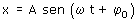
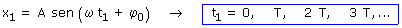
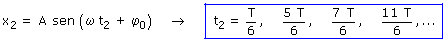
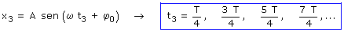
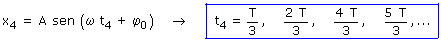
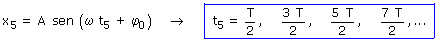

Ecuación del movimiento:
|
 |
Parámetros: ω = 2π/T, φ0 = π/2 |
Calculamos cuando está el móvil en cada una de las posiciones:
x1 = A |
 |
x2 = A/2 |
 |
x3 = 0 |
 |
x4 = -A/2 |
 |
x5 = -A |
 |
El tiempo que tarda el móvil en ir de un punto a otro se obtendrá restando los valores del tiempo cuando el móvil pasa por ellos por primera vez yendo en el mismo sentido
Sentido: Negativo |
Origen |
Destino |
Tiempo en el recorrido |
x = A |
x = A / 2 |
Δt = T / 6 - 0 = T / 6 |
|
x = A / 2 |
x = 0 |
Δt = T / 4 - T / 6 = T / 12 |
|
x = 0 |
x = -A / 2 |
Δt = 2·T / 6 - T / 4 = T / 12 |
|
x = -A / 2 |
x = -A |
Δt = T / 2 - 2·T / 6 = T / 6 |
Sentido: Positivo |
x = -A |
x = -A / 2 |
Δt = 4·T / 6 - T / 2 = T / 6 |
x = -A / 2 |
x = 0 |
Δt = 3·T / 4 - 4·T / 6 = T / 12 |
|
x = 0 |
x = A / 2 |
Δt = 5·T / 6 - 3·T / 4 = T / 12 |
|
x = A / 2 |
x = A |
Δt = T - 5·T / 6 = T / 6 |
Resumen de los resultados:
Para un mismo recorrido se tarda lo mismo en ir que en volver
Se tarda el mismo tiempo en hacer recorridos simétricos respecto al origen
Desde cada extremo al centro se tarda T/4 y de extremo a extremo se tarda T/2
En recorrer la primera mitad de la amplitud se tarda la mitad de lo que se tarda en recorrer la segunda mitad de la amplitud